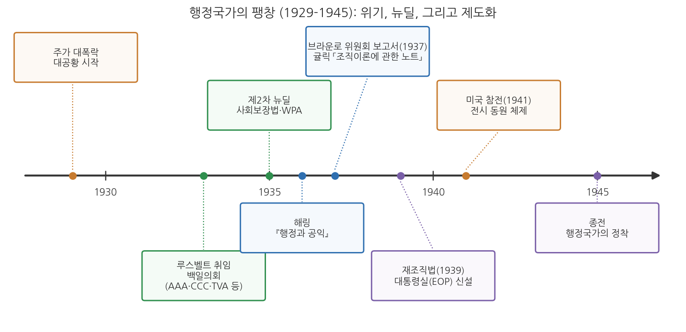
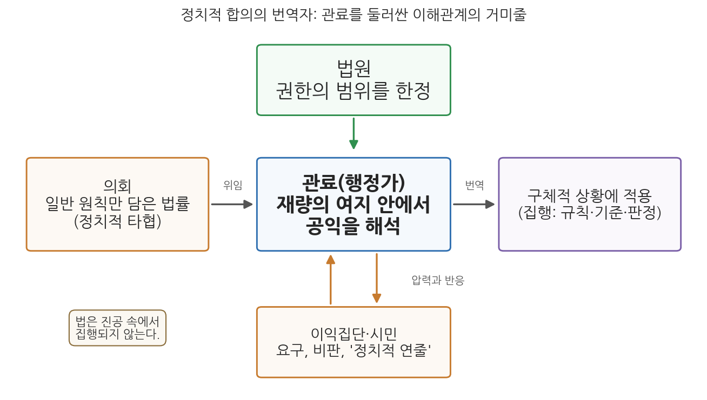

8주차 1차시. 행정국가의 제도화 (1): 해링의 관료제와 공익
공익은 법을 집행하는 행정가를 인도하는 기준이며, 행정에 통일성과 질서와 객관성을 들여오기 위해 고안된 언어적 상징이다. (펜들턴 해링, 『행정과 공익』)
이 장에서 배우는 것
어느 시청의 환경 담당 주무관을 상상해 보자. 의회가 만든 법에는 "사업장은 주변 환경에 현저한 피해를 주어서는 아니 된다"라고만 적혀 있다. 그런데 오늘 책상 위에는 정반대의 민원 두 장이 놓여 있다. 공장 주변 주민들은 "소음과 분진이 심하니 조업을 제한해 달라"고 요구하고, 공장 측은 "기준을 다 지켰는데 조업을 막으면 수십 명이 일자리를 잃는다"고 호소한다. 법조문 어디에도 "현저한 피해"가 데시벨 몇부터인지, 일자리와 조용한 밤 중 무엇이 먼저인지는 적혀 있지 않다. 결정은 주무관의 몫이다. 이 주무관은 지금 무엇을 기준으로 판단해야 하는가.
1936년, 미국의 정치학자 펜들턴 해링은 바로 이 장면이 현대 행정의 본질이라고 보았다. 의회가 만든 법률은 정치적 타협의 산물이라 일반 원칙만 담고 있고, 그 빈칸을 구체적 상황에서 메우는 일, 곧 재량의 행사는 관료에게 맡겨진다. 그렇다면 관료를 이끄는 기준은 무엇인가. 해링의 대답이 공익(public interest)이다. 그런데 그 대답은 뜻밖에도 정직하다. 공익은 측량할 수 없고, 각 공무원이 스스로 그 의미를 찾아내야 한다는 것이다. 7주차에서 베버의 이념형 관료제와 화이트의 관리 중심 행정학을 읽었다면, 이 장에서는 대공황과 뉴딜로 거대해진 행정국가 안에서 관료가 실제로 어떤 위치에 서게 되었는지를 읽는다.
이 장에서는 구체적으로 다음을 배운다.
- 대공황과 뉴딜이 행정국가를 어떻게 팽창시켰는지
- 해링이 말한 "정치적 합의의 번역자"로서의 관료의 위치
- 공익 개념의 기능과 그 주관성, 그리고 재량에 따르는 책임
- 윌슨과 굿나우의 정치-행정 이원론이 왜 유지되기 어려워졌는지
- 행정재량과 책임이라는 문제의 현대적 모습
이 장은 하나의 질문을 따라 전개된다. "법이 다 정해 주지 않는 곳에서, 관료는 무엇을 기준으로 판단해야 하는가?"
1.1 대공황과 뉴딜이 만든 행정국가의 팽창을 본다 → 1.2 펜들턴 해링이라는 사상가를 만난다 → 1.3 원전 강독 1: 정치적 합의를 번역하는 관료와 재량 → 1.4 원전 강독 2: 민주주의와 거대 관료제의 역설 → 1.5 원전 강독 3: 공익이라는 기준과 이해관계의 거미줄 → 1.6 정치-행정 이원론의 붕괴를 정리한다 → 1.7 행정재량과 책임이라는 현대적 함의를 짚는다.
1.1 대공황과 뉴딜: 행정국가는 왜 팽창했는가
1929년, 시장이 무너지다
1929년 10월 뉴욕 증권시장의 주가가 폭락했다. 은행이 연쇄적으로 문을 닫았고, 공장이 멈췄으며, 1933년 무렵에는 미국 노동자 네 명 중 한 명이 일자리를 잃은 상태였다. 4주차에서 보았듯 19세기 미국인은 "가장 적게 다스리는 정부가 가장 좋은 정부"라는 관념 속에 살았고, 연방정부는 작았다. 그러나 대공황은 이 관념을 뿌리째 흔들었다. 개인의 근면으로도, 자선단체의 구호로도, 주정부의 재정으로도 감당할 수 없는 규모의 재난 앞에서, 사람들은 연방정부가 나서기를 요구하기 시작했다.
1933년 3월 취임한 프랭클린 루스벨트 대통령은 뉴딜(New Deal)이라 불리는 일련의 개입 정책으로 응답했다. 취임 직후의 이른바 백일의회에서 농업조정청(AAA), 민간자원보존단(CCC), 테네시계곡개발공사(TVA) 같은 기관이 잇달아 만들어졌고, 1935년에는 사회보장법과 공공사업진흥청(WPA)이 뒤따랐다. 사람들은 머리글자 약칭으로 불리는 이 기관들을 "알파벳 기관(alphabet agencies)"이라 불렀다. 규제, 구호, 개발, 보험까지, 과거에 민간의 일이거나 아예 누구의 일도 아니었던 영역이 연방 행정의 일이 되었다.

그림 8-1을 읽는 법은 이렇다. 가로축은 1929년부터 1945년까지의 시간이고, 기준선 위아래의 상자가 주요 사건이다. 주황색은 위기(대공황, 참전), 초록색은 뉴딜 정책, 파란색은 이번 주에 읽는 텍스트(해링 1936, 귤릭 1937), 보라색은 제도화의 결과(재조직법과 대통령실 신설, 행정국가의 정착)를 나타낸다. 여기서 알 수 있는 것은 순서다. 먼저 위기가 왔고, 정부 기능이 폭발적으로 늘었으며, 그 다음에야 "이 거대해진 행정을 어떻게 이해하고 어떻게 조직할 것인가"라는 이론적·제도적 응답이 나왔다. 해링의 『행정과 공익』(1936)과 다음 차시에 읽을 귤릭의 조직이론(1937)은 바로 이 응답의 자리에 놓여 있다.
행정국가라는 새 현실
이렇게 정부의 역할이 입법·사법보다 행정을 중심으로 커지고, 국민 생활의 넓은 영역이 행정기관의 결정에 좌우되는 국가를 행정국가(administrative state)라 부른다. 행정국가에서 국민의 삶에 실제로 영향을 미치는 결정의 상당수는 의사당이 아니라 관청에서 내려진다. 어떤 농가가 보조금을 받을지, 어떤 방송국이 주파수를 받을지, 어떤 공장이 규제를 받을지를 정하는 것은 법률의 일반 조항이 아니라 그것을 적용하는 행정기관이기 때문이다.
행정국가(administrative state)는 정부 기능의 중심이 행정부로 옮겨 가, 행정기관이 광범한 재량과 준입법(규칙 제정)·준사법(판정) 권한을 행사하며 국민 생활의 넓은 영역을 규율하는 국가를 말한다. 미국에서는 대공황과 뉴딜을 거치며 본격화되었다.
문제는 이 팽창이 기존의 행정학 이론과 잘 맞지 않았다는 점이다. 5주차에서 읽은 윌슨과 굿나우의 정치-행정 이원론을 떠올려 보자. 정치는 국가의지를 표출하고 행정은 그것을 집행할 뿐이라는 그림에서, 관료는 정해진 의지를 수행하는 중립적 도구였다. 그러나 알파벳 기관의 관료들은 "공익, 편의 또는 필요"라는 법조문 한 줄을 들고 누구에게 면허를 주고 누구를 규제할지 결정하고 있었다. 집행이 곧 선택이고, 선택이 곧 정치적 결과를 낳는 현실이 눈앞에 펼쳐진 것이다. 이 현실을 정면으로 이론화한 사람이 펜들턴 해링이다.
1.2 펜들턴 해링: 정치와 행정의 접점을 탐구한 학자
펜들턴 해링(E. Pendleton Herring, 1903-2004)은 미국의 정치학자이자 행정사학자다. 그는 일찍부터 이익집단 연구에 몰두했고, 1930년대 대규모 연방 재조직 논쟁 한가운데에서 「사회 세력과 연방 관료제의 재조직」(1934)이라는 논문과 『행정과 공익(Public Administration and the Public Interest)』(1936)이라는 책을 내놓았다. 관료제의 재량, 조정, 정당성이라는 문제를 "공익"이라는 개념으로 수렴시킨 것이 이 책의 핵심 기여다. 훗날 그는 미국정치학회(APSA) 회장(1952-53)과 사회과학연구협의회(SSRC) 총재(1948-68)를 지내며 전후 사회과학의 성장에 큰 역할을 했고, 하버드대학 케네디스쿨의 초기 프로그램 설계에 기여했으며, 국방부와 중앙정보국(CIA)의 설립 근거가 된 국가보안법(1947)의 설계에도 참여했다. 2004년 프린스턴의 자택에서 100세로 세상을 떠났다.
해링의 출발점은 앞선 이론가들과 다르다. 윌슨과 굿나우가 정치와 행정을 나누는 데서 출발했고 테일러와 화이트가 관리의 능률에서 출발했다면, 해링은 이익집단이라는 정치의 현실에서 출발한다. 그가 본 미국 정치는 농민, 노동자, 기업, 소비자 같은 집단들이 저마다 정부를 자기편으로 끌어들이려 경쟁하는 무대였다. 그리고 그 경쟁의 결과물인 법률이 관료의 책상에 도착하는 순간부터가 그의 관심사였다. 이제 원전을 직접 읽어 보자. 아래 발췌는 『행정과 공익』에서 뽑은 것이다.
1.3 원전 강독 1: 정치적 합의를 번역하는 관료
의회는 원칙을 만들고, 관료는 빈칸을 메운다
"입법 과정에서 도달한 경제적·사회적 타협을 실제로 작동하는 것으로 만들고, 집단 사이의 차이를 조정하는 부담의 큰 몫은 관료의 어깨에 놓여 있다. 의회는 일반 원칙을 선언한 법률을 만든다. 세부 사항은 추가 규정으로 메워야 한다. 그 법을 적용해야 할 조건이 무엇인지 판단하는 일은 관료에게 맡겨진다. 이 임무를 수행하는 데에는 관료가 입법자보다 유리한 자리에 서 있다. 관료의 일상 업무는 법이 겨냥하는 상황과 직접 맞닿아 있기 때문이다. 무엇이 집행 가능한지, 입법적 명령의 한계가 어디까지인지를 관료가 더 잘 내다볼 수 있다."
무슨 말인가. 법률은 완성품이 아니라는 것이다. 의회에서 여러 집단의 이해가 부딪히고 타협한 결과물인 법률은, 모두가 동의할 수 있을 만큼 일반적인 원칙만을 담는다. "현저한 피해를 주어서는 아니 된다" 같은 문구가 그렇다. 그 문구가 현실에서 작동하려면 누군가 "이 사업장의 이 소음은 현저한 피해인가"를 판단해 주어야 한다. 해링은 이 판단, 곧 정치적 타협을 작동 가능한 규칙과 판정으로 옮기는 일을 관료가 맡는다고 말한다. 이 장의 도입 사례에서 주무관이 하던 일이 바로 그것이다. 이 책의 표현을 빌리면 관료는 정치적 합의의 번역자다.
왜 중요한가. 이 관찰은 "행정은 정해진 의지의 집행일 뿐"이라는 이원론의 그림을 안에서부터 무너뜨리기 때문이다. 번역은 기계적 작업이 아니다. 어떤 단어를 고르느냐에 따라 뜻이 달라지듯, 관료가 빈칸을 어떻게 메우느냐에 따라 법의 실제 효과가 달라진다. 게다가 해링은 관료가 이 일을 입법자보다 더 잘할 수 있는 위치에 있다고까지 말한다. 현장과 맞닿아 있는 쪽은 의사당이 아니라 관청이기 때문이다.
재량은 능력이자 부담이다
"행정 재량이 커지면 규칙을 구체적 상황에 더 사려 깊게 적용할 수 있다. 그러나 그만큼 행정가가 짊어지는 책무도 무거워진다. 법률의 문구는 행정가가 움직일 수 있는 범위를 한정하지만, 그 재량의 여지 안에서 행정가는 국가 목적에 대한 자신의 해석을 기록해야 한다."
무슨 말인가. 재량(discretion)이란 법이 정해 주지 않은 부분에서 행정가가 스스로 판단할 수 있는 여지다. 해링은 재량의 양면을 동시에 본다. 한 면에서 재량은 좋은 것이다. 획일적 규칙을 기계적으로 적용하면 구체적 상황의 차이를 놓치지만, 재량이 있으면 사정을 헤아린 적용이 가능하다. 다른 면에서 재량은 무거운 것이다. 법률의 울타리 안이라 해도, 그 안에서 내리는 판단 하나하나가 "국가의 목적이 무엇인가"에 대한 행정가 자신의 해석을 세상에 기록으로 남기기 때문이다.
왜 중요한가. "자신의 해석을 기록해야 한다"는 구절은 이 책 전체에서 가장 무거운 문장 가운데 하나다. 관료의 판단은 사적인 의견으로 끝나지 않는다. 그것은 국가의 이름으로 집행되고, 누군가의 권리와 생계를 실제로 바꾼다. 판단을 피할 길도 없다. 판단하지 않는 것, 곧 집행하지 않는 것 역시 하나의 선택이기 때문이다. 재량이 있는 곳에 반드시 책임의 문제가 따라온다는 이 통찰은, 이 장의 마지막 절에서 다시 만나게 된다.
1.4 원전 강독 2: 민주주의와 거대 관료제의 역설
자유민주국가는 관료제가 떠받친다
"민주주의는 적절한 행정 조직을 발전시켜야만 살아남을 수 있다. 따라서 우리는 민주국가의 목적이 집단 이익의 자유로운 조정이며, 이 목적을 이루려면 거대한 행정 기계를 발전시켜야 한다는 결론에 이른다. 제퍼슨식 민주주의자에게는 역설로 들리겠지만, 자유민주국가는 거대한 관료제가 떠받쳐야 한다. 그러나 이런 관점은 널리 받아들여지지 못했다."
무슨 말인가. 토머스 제퍼슨 이래 미국 민주주의의 통념은 "정부가 작을수록 자유는 크다"였다. 해링은 이 통념을 뒤집는다. 현대 사회에서 민주주의가 실제로 하는 일은 농민과 기업, 노동과 자본 같은 집단들의 이익을 자유롭게 조정하는 것인데, 그 조정을 실행하려면 경찰과 공중위생에서 공영 사업과 대규모 구제 사업까지 막대한 공공 서비스가 필요하고, 그 서비스는 크고 전문화된 행정 조직 없이는 제공될 수 없다. 그러니 관료제는 민주주의의 적이 아니라 민주주의의 존립 조건이라는 것이다.
왜 중요한가. 이 명제는 당시로서도 지금으로서도 역설처럼 들린다. 관료제라 하면 흔히 국민 위에 군림하는 경직된 조직을 떠올리고, 민주주의라 하면 그런 조직을 견제하는 힘을 떠올리기 때문이다. 해링 자신도 이 관점이 "널리 받아들여지지 못했다"고 담담하게 적는다. 실제로 그는 미국의 시민이 이중적이라고 지적한다. 시민들은 국가가 사적 영역에 개입한다고 비난하면서도, 정작 자신들에게는 정부의 특별한 배려를 요구해 왔다는 것이다. 도움은 청하되 통제는 거부하는 이 태도 탓에, 연방 행정은 통합된 전체가 되지 못하고 서비스 기관, 독립 규제위원회, 균형이 맞지 않는 관서와 부처들의 "뒤범벅"이 되었다고 그는 진단한다. 그리고 해법은 기관을 더 만드는 것이 아니라 기존의 것들을 재조직하는 데 있다고 본다. 이 재조직이라는 과제는 다음 차시의 귤릭과 브라운로 위원회로 곧장 이어진다.
입법의 열기는 식고, 집행의 부담은 남는다
"입법부는 일시적인 대중의 열기에 힘입어 법을 통과시키는 것으로 임무를 마치고, 다른 사안으로 관심을 돌린다. 그리하여 불만에 찬 집단을 상대로 그 법을 집행하는 일은 관료에게 맡겨진다. 입법 의지는 법이 바뀔 때까지 얼어붙어 있다. 그사이 경제적·정치적 조건이 변하여 법에 대한 불신이 자라나더라도, 그 비판에 응답하는 법 개정이 반드시 뒤따르지는 않는다. 그러나 공무원의 법적 책임은 그대로 남으며, 공무원이 받는 비난은 자신의 명백한 임무를 수행한 대가가 된다."
무슨 말인가. 법이 만들어지는 시간과 법이 집행되는 시간은 어긋난다. 법은 어떤 사건이 여론을 달구었을 때, 그 열기를 타고 통과된다. 그러나 열기는 식고 의회는 다음 사안으로 옮겨 가는 반면, 법은 개정되기 전까지 "얼어붙은" 채 남아 있고, 관료는 그 법을 상황이 바뀐 뒤에도 계속 집행해야 한다. 규제받는 집단의 원망은 법을 만든 의원이 아니라 법을 집행하는 공무원에게 쏟아진다.
왜 중요한가. 이 대목은 관료를 향한 비난의 구조를 드러낸다. 해링은 허먼 파이너의 말을 인용하며 대중이 어느 나라에서나 관리를 적대시한다는 점을 인정한다. 검열관이든 세무공무원이든, 관리는 "주러 오는 것이 아니라 빼앗으러 오는" 존재로 경험되기 때문이다. 여기에 미국 특유의 사정이 겹친다. 식민지 시절부터 이어진 정부 불신의 전통, 그리고 시민이 관료제에 맞서는 주된 수단이 여전히 "정치적 연줄(political pull)"이라는 현실이다. 관료는 자신이 만들지 않은 법을, 열기가 식은 뒤에도, 불만에 찬 집단을 상대로 집행하면서, 그 임무 수행의 대가로 비난을 받는다. 오늘날 일선 공무원이 "왜 이런 규제를 하느냐"는 항의 앞에서 "법이 그렇습니다"라고 답할 수밖에 없는 장면과 정확히 겹친다.
1.5 원전 강독 3: 공익이라는 기준과 이해관계의 거미줄
공익은 언어적 상징이다
"행정가를 이끌 기준은 무엇인가? 법을 집행하는 행정가를 인도하는 기준은 공익이다. 공익은 행정에 통일성과 질서와 객관성을 들여오기 위해 고안된 언어적 상징이다. 이 개념은 사법부에서 '적법절차' 조항이 하는 역할을 관료제에서 맡는다. 추상적 의미는 모호하지만, 적용의 파급효과는 넓다."
무슨 말인가. 재량의 여지 안에서 판단해야 하는 관료에게 법이 쥐여 주는 기준이 공익이다. 실제로 당시 미국 의회는 라디오위원회에 "공익, 편의 또는 필요"에 따라, 연방거래위원회에 "공익에 부합한다"고 판단할 때 법을 적용하라고 권한을 주었다. 해링은 이 개념의 성격을 냉정하게 규정한다. 공익은 하늘에 새겨진 실체가 아니라 언어적 상징(verbal symbol), 곧 행정에 일관성과 객관성이라는 규율을 부여하기 위해 고안된 말이라는 것이다. 헌법의 "적법절차" 조항이 그 자체로는 모호하지만 사법 판단 전체를 규율하는 것처럼, 공익은 모호하지만 행정 판단 전체를 규율한다.
왜 중요한가. 공익을 "상징"이라 부르는 것은 공익을 깎아내리는 말이 아니다. 오히려 공익이 실제로 어떻게 작동하는지를 정확히 기술하려는 시도다. 상징은 내용이 미리 정해져 있지 않기에, 매 사안에서 누군가가 그 내용을 채워야 한다. 그 누군가가 바로 관료다. 그렇다면 관료는 무엇으로 그 내용을 채우는가. 다음 발췌가 해링의 가장 유명한 대답이다.
측량할 수 없는 기준, 그리고 자신의 별
"공익을 기준으로 내세우는 것은 측량할 수 없는 것을 내미는 일이다. 공익의 가치는 심리적인 것이어서, 책임 있는 공무원 각자가 그 말 속에서 스스로 찾아내는 의미를 넘어설 수 없다. 이 주관적 개념에 따라, 그리고 자신의 법정 권한의 한계 안에서, 관료는 눈앞의 특수 이익들 가운데 공식 승인을 부여할 조합을 고른다. 그래서 실천에서는 공익 개념이 특정 집단의 이익과 동일시되면서 비로소 실체를 얻는다. 공무원은 국민투표로 자신의 판단을 시험해 보는 위안도 없이, 공익에 따라 행동하려 애써야 한다. 눈앞의 함정을 밝혀 줄 빛이 거의 없는 채로, 자신의 별을 따라가야 하는 것이다."
무슨 말인가. 공익은 저울이 아니다. 상충하는 집단들의 요구를 올려놓고 무게를 잴 수 있는 객관적 계기가 아니라는 뜻이다. 공익의 내용은 결국 판단하는 공무원 각자가 그 말 속에서 찾아내는 의미이고, 그 판단에 따라 관료는 눈앞의 특수 이익들 가운데 어떤 조합에 공식 승인을 줄지 고른다. 그래서 실천 속의 공익은 언제나 특정 집단들의 이익과 결합한 모습으로 나타난다. 해링은 여기서 루소를 끌어온다. 루소가 그린 시민은 일반의지에 따라 투표하고, 개표 결과 자신이 소수임을 알면 자신이 일반의지를 잘못 짐작했음을 깨닫는다. 그러나 관료에게는 그런 개표가 없다. 자기 판단이 공익에 맞았는지 확인해 줄 "관료적 국민투표"의 위안 없이, 어두운 길에서 자신의 별을 따라가야 한다.
왜 중요한가. 이 구절은 공익 개념에 대한 냉소가 아니라, 공직의 실존적 조건에 대한 묘사다. 해링은 공익 기준을 버리자고 하지 않는다. 버릴 수도 없다. 다만 그 기준이 판단을 대신해 주지 않는다는 사실, 판단의 무게가 결국 개별 공무원의 양심과 해석에 얹힌다는 사실을 직시하자는 것이다. 2주차에서 읽은 공자의 통치자 자격론이 "다스리는 자의 수신"을 물었다면, 해링은 2천 년 뒤의 관료제 안에서 같은 물음이 어떻게 되살아나는지를 보여 준다.
해링 이전의 개혁가들은 공익을 자명한 것으로 여겼다. 능률적인 정부, 부패 없는 행정이 곧 공익이라는 식이다. 해링은 이익집단 정치의 관찰자였기에 그렇게 말할 수 없었다. 그가 본 현실에서는 농민 보조금도, 기업 규제도, 규제 완화도 저마다 "공익"의 이름으로 요구되었다. 모두가 공익을 말하는데 그 내용이 제각각이라면, 공익은 객관적 사물이 아니라 판단하는 사람의 마음속에서 구성되는 것, 곧 심리적인 것이라 보는 편이 정직하다. 이 통찰은 훗날 공익을 둘러싼 행정학의 오랜 논쟁(공익 실체설과 과정설)의 출발점이 되었다.
법은 진공 속에서 집행되지 않는다
"실제의 공공행정은, 법적 책임에 대한 자신의 해석에 따라 공적 지위에서 행동하는 한 사람이, 법적으로 종속된 위치에 있는 다른 사람에게 법률을 적용하는 과정이다. 이 과정에 '대중'은 관여하지 않는다. 법을 집행하는 공무원에게 대중은 추상일 뿐이다. (…) 법은 진공 속에서 집행되지 않는다. 그 법의 집행 또는 비집행에 이해를 가진 모든 사람들로 이루어진 환경 속에서 집행된다. 공무원은 이해관계의 거미줄에 둘러싸여 있다. 그리고 그 거미줄을 지배하는 거미는 종종 예측하기 어렵다. 최종 결정자는 법원일 수도, 입법부일 수도, 행정상의 상급자일 수도, 강력한 경제적 이해일 수도 있다. 행정가는 정치적·사회적·경제적 힘이 얽힌 복잡한 망 속의 한 가닥이다."
무슨 말인가. 행정을 아주 가까이에서 들여다보면, 그것은 "정부가 국민에게" 법을 적용하는 일이 아니라 "한 사람이 다른 사람에게" 법을 적용하는 일이다. 그 장면에 "대중"이라는 실체는 등장하지 않는다. 공무원이 실제로 마주하는 것은 민원인, 규제 대상 기업, 업계 단체처럼 뚜렷한 이해와 목소리를 가진 개인과 집단이고, "대중의 반응"이란 그런 개별 반응들 속에서 공무원이 읽어내기로 선택한 무엇일 뿐이다. 그래서 법 집행의 환경은 진공이 아니라 이해관계의 거미줄이며, 관료는 그 거미줄의 바깥에 선 심판이 아니라 그 안에 얽힌 한 가닥이다.

그림 8-2가 이 절의 내용을 한눈에 보여 준다. 가운데의 관료는 왼쪽의 의회로부터 일반 원칙만 담긴 법률을 위임받아, 오른쪽의 구체적 상황에 적용되는 규칙과 판정으로 번역한다. 그러나 이 번역은 진공에서 이루어지지 않는다. 위에서는 법원이 권한의 범위를 한정하고, 아래에서는 이익집단과 시민이 요구와 비판과 연줄로 압력을 가한다. 여기서 알 수 있는 것은 관료의 판단이 순수한 기술적 계산일 수 없다는 점이다. 관료는 정치적 힘들의 한복판에서 공익을 해석한다.
왜 중요한가. "대중은 추상"이라는 명제는 공익 논의의 냉정한 바닥이다. 공무원이 "국민 전체를 위해 일한다"고 말할 때, 그 국민 전체는 창구에 나타나지 않는다. 나타나는 것은 언제나 특정한 누군가다. 조직되지 않은 다수의 이익은 목소리가 없고, 조직된 소수의 이익은 크게 들린다. 해링이 관료에게 "조직화가 덜 된 집단의 의견에까지 손을 뻗을 수 있다"고 적은 이유가 여기 있다. 재량은 시끄러운 쪽의 손을 들어 주는 데도 쓸 수 있지만, 들리지 않는 목소리를 찾아 나서는 데도 쓸 수 있다.
1.6 이원론의 붕괴: 재량과 공익의 해석자로서의 관료
이제 해링의 논지를 개념으로 정리하자.
행정재량(administrative discretion)은 법률이 세부를 정하지 않은 범위 안에서 행정가가 스스로 판단하고 선택할 수 있는 여지다. 재량은 구체적 상황에 맞는 사려 깊은 적용을 가능하게 하지만, 동시에 행정가에게 판단의 책임을 지운다.
공익(public interest)은 그 재량 행사를 인도하는 기준으로, 해링에 따르면 행정에 통일성·질서·객관성을 부여하기 위한 언어적 상징이다. 그 내용은 미리 주어져 있지 않으며, 각 공무원이 상충하는 이익들 사이에서 해석을 통해 채워 나간다.
이 두 개념을 붙여 놓으면 해링이 행정사에서 차지하는 자리가 보인다. 윌슨은 "행정은 정치의 고유 영역 밖에 있다"고 썼고, 굿나우는 국가의지의 표출(정치)과 집행(행정)을 기능적으로 나누었다. 이 이원론은 엽관제의 폐해에서 행정을 구출하기 위한 이론적 방패였다. 그러나 해링의 관찰이 옳다면 그 방패에는 처음부터 금이 가 있었다. 집행의 한가운데에 재량이 있고, 재량의 행사가 곧 상충하는 이익들 사이의 선택이라면, 행정은 정치가 끝나는 곳에서 시작하는 것이 아니라 정치가 다른 형태로 계속되는 곳이기 때문이다.
주의할 점은 해링이 이원론을 조롱하거나 폐기 처분한 것이 아니라는 사실이다. 그는 이원론이 전제한 세계, 곧 의회가 의지를 완결된 형태로 정해 주는 세계가 뉴딜의 현실과 맞지 않음을 보여 주었을 뿐이다. 정치와 행정의 구분은 규범으로서는 여전히 의미가 있다. 관료가 선거 정치에 개입해서는 안 된다는 요청은 유효하다. 무너진 것은 "행정에는 판단이 없다"는 서술적 주장이다. 해링 이후의 행정학은 관료의 판단을 없는 것처럼 취급하는 대신, 그 판단을 어떻게 인도하고 통제하고 책임지게 할 것인가를 묻게 되었다.
이원론의 붕괴는 "관료가 정치인처럼 행동해도 된다"는 뜻이 아니다. 무너진 것은 사실 명제(행정에는 재량과 가치 판단이 없다)이지, 규범 명제(관료는 당파 정치에 중립을 지켜야 한다)가 아니다. 오히려 해링의 논지는 반대 방향을 가리킨다. 행정 안에 판단이 있다는 사실을 인정해야, 비로소 그 판단에 대한 책임을 물을 수 있다는 것이다.
한 가지 더 짚어 둘 것이 있다. 해링은 재량을 쥔 관료가 고립되어 있다고 보았다. "현재의 관료제는 막대한 권한을 쌓았지만 방향과 조정이 결여되어 있다"는 그의 진단은, 각 기관이 저마다의 공익 해석을 들고 제각기 움직이는 상태를 가리킨다. 대통령이 명목상 행정부의 수장이지만 조정의 과업은 한 사람의 능력을 넘어선다는 그의 지적은, 이듬해 브라운로 위원회의 문제의식과 정확히 겹친다. 재량의 문제(이 장)와 조직·조정의 문제(다음 장)는 행정국가 제도화의 동전의 양면인 셈이다.
1.7 현대 행정에의 함의: 재량과 책임
해링이 던진 물음, 곧 "재량을 쥔 관료를 무엇이 인도하고 무엇이 통제하는가"는 그의 책이 나온 지 90년이 지난 지금도 행정학의 중심 질문이다.
첫째, 재량 통제의 논쟁이 이어졌다. 해링이 인용한 허먼 파이너는 1940-41년 무렵 칼 프리드리히와 유명한 논쟁을 벌였다. 프리드리히는 현대 행정의 전문성과 복잡성 때문에 외부 통제만으로는 부족하며, 전문직업적 기준과 내면화된 책임감이라는 내적 통제가 중요하다고 보았다. 파이너는 내적 책임에 기대는 것은 위험하며, 의회와 법원에 의한 외적 통제가 민주주의의 요체라고 반박했다. 이 논쟁의 씨앗이 해링의 책에 이미 들어 있음을 확인해 보라. 공익이 각 공무원이 스스로 찾아내는 의미라면(내적 책임), 그 주관성이 걱정스러운 만큼 외부의 고삐가 필요하다(외적 통제). 두 요청은 어느 한쪽으로 환원되지 않는다.
둘째, 한국 행정에서도 같은 긴장이 반복된다. 한국의 법령 역시 "공공복리", "공익상 필요", "상당한 이유" 같은 열린 문구로 행정기관에 재량을 위임하며, 일선 공무원은 인허가, 단속, 보조금 심사의 현장에서 매일 그 빈칸을 메운다. 문제는 재량의 양쪽에 함정이 있다는 점이다. 재량을 남용하면 특혜와 부패가 되고, 재량을 회피하면 복지부동과 소극행정이 된다. 감사와 처벌을 강화하면 남용은 줄지만 회피가 늘고, 면책을 넓히면 회피는 줄지만 남용이 걱정된다. 한국 정부가 2019년 적극행정 운영규정을 만들어, 공무원이 공익을 위해 적극적으로 판단한 경우 고의나 중과실이 없으면 징계 책임을 면제하도록 한 것은, 바로 이 균형점을 제도로 찾으려는 시도다. 해링의 언어로 옮기면, "자신의 별을 따라간" 공무원이 결과만으로 처벌받지 않도록 하되, 별을 핑계 삼은 자의는 걸러내겠다는 것이다.
셋째, 공익의 해석자라는 관료상은 오늘날 더 무거워졌다. 플랫폼 규제, 감염병 대응, 기후 정책처럼 이해가 첨예하게 갈리고 과학적 불확실성이 큰 영역일수록, 의회가 법률에 담을 수 있는 것은 일반 원칙뿐이고 실질적 결정은 행정으로 내려온다. 해링이 본 라디오 주파수 배분의 자리에 지금은 인공지능 규제와 데이터 정책이 놓여 있을 뿐, 구조는 같다. 조직된 이익의 큰 목소리와 조직되지 않은 이익의 침묵 사이에서 무엇이 공익인지 해석해야 하는 상황도 같다. 행정학을 공부하는 여러분이 장차 어느 창구에 앉든, 해링의 문장은 남의 이야기가 아니다.
요약
대공황은 작은 정부라는 미국의 통념을 무너뜨렸고, 뉴딜은 규제·구호·개발·보험의 광대한 영역을 연방 행정의 일로 만들며 행정국가를 낳았다(1.1). 이익집단 정치의 연구자였던 펜들턴 해링은 『행정과 공익』(1936)에서 이 거대해진 행정의 내부를 들여다보았다(1.2). 그가 본 관료는 의회가 만든 일반 원칙의 법률을 구체적 규칙과 판정으로 옮기는 정치적 합의의 번역자이며, 재량의 여지 안에서 국가 목적에 대한 자신의 해석을 기록해야 하는 존재다(1.3). 관료제는 민주주의의 적이 아니라 집단 이익의 자유로운 조정이라는 민주국가의 목적을 실행하는 조건이지만, 시민의 이중적 태도와 정부 불신 속에서 관료는 식어 버린 입법 열기의 뒤치다꺼리를 하며 비난을 받는다(1.4). 그 관료를 인도하는 기준인 공익은 측량할 수 없는 언어적 상징이어서, 각 공무원이 이해관계의 거미줄 한가운데에서 스스로 그 의미를 채워야 한다(1.5). 이로써 "행정에는 판단이 없다"는 정치-행정 이원론의 서술적 전제는 무너졌고, 행정학의 질문은 재량의 부인에서 재량의 책임으로 옮겨 갔다(1.6). 프리드리히-파이너 논쟁의 내적·외적 통제론과 한국의 적극행정 제도는 이 질문의 현대적 후속편이다(1.7).
토론·복습 문제
8-1. (원전 구절 해석) 해링은 공익을 "행정에 통일성과 질서와 객관성을 들여오기 위해 고안된 언어적 상징"이라 부르고, 사법부의 "적법절차" 조항에 비유했다. 이 비유가 성립하는 이유를 두 개념의 공통점(모호한 추상성, 넓은 파급효과, 판단 규율 기능)을 들어 설명해 보라. 또한 "상징"이라는 규정이 공익 개념을 무의미하게 만드는지, 아니면 오히려 그 작동 방식을 정확히 드러내는지 자신의 견해를 밝혀 보라.
8-2. (기말 대비 서술형) 해링의 『행정과 공익』을 근거로 정치-행정 이원론이 붕괴하는 논리를 설명하고, 이원론의 붕괴가 "관료의 정치적 중립 의무"까지 무효로 만드는 것은 아닌 이유를 논의하시오. (힌트: 사실 명제와 규범 명제의 구분, 재량과 책임의 관계)
8-3. (사례 적용) 이 장 도입부의 환경 담당 주무관 사례로 돌아가 보자. 해링의 개념들(재량, 공익의 해석, 이해관계의 거미줄, 조직되지 않은 이익)을 사용하여 이 주무관이 처한 상황을 분석하고, 여러분이라면 판단에 앞서 무엇을 확인하고 누구의 목소리를 추가로 들을지 제안해 보라.
8-4. (역사 연결) 그림 8-1의 연표를 보면 해링의 책(1936)은 뉴딜의 팽창(1933-35)과 브라운로 위원회 보고서(1937) 사이에 놓여 있다. 위기 → 기능 팽창 → 이론적·제도적 응답이라는 이 순서가 다른 시대에도 반복되는지, 여러분이 아는 사례(예: 감염병 위기 이후의 방역 행정 개편)를 하나 들어 검토해 보라.